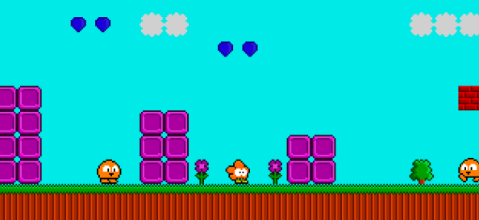

Eversion
2009-04-22 01:38:49
status: publish
author: Bryan
This indie title, Eversion, is fantastically deceptive and spooky.
This should of course be incredibly obvious upon spotting a screenshot of the game...er...maybe not?

Despite the fact that this image is downright adorable... the point seems to be that the game design capitalizes on the player's preconceptions of what such a cute-looking indie 8-bit style platformer should seemingly be like. However while music and visuals and simple gameplay initially points in that direction, the game ultimately leads to a quite different experience from the player's expectations.
It manages to make a smoothly gradual transition into unease, menace and beyond while simultaneously shocking me at least a few times. The sound and music were great, but the control and level design certainly could have been expanded on. However the effect the game aimed to create was certainly not hurt at all by these minor shortcomings.
Very worth the few minutes it takes for a playthrough.
Comments:
2009-04-28 12:19:40
Bryan
BEHIND YOU